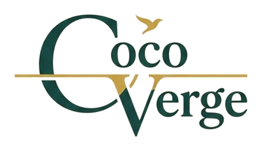
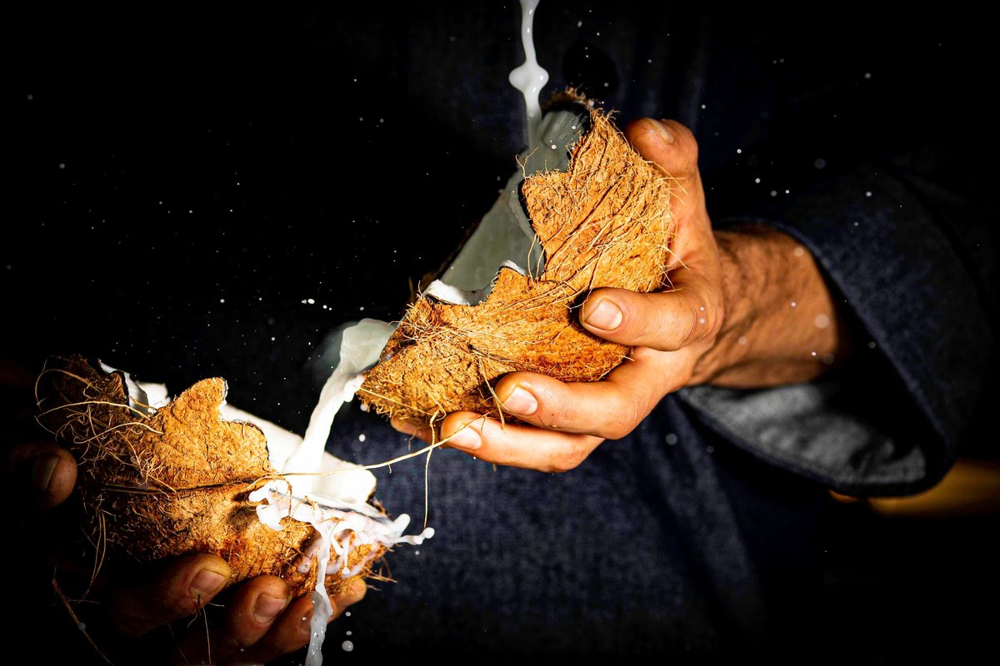
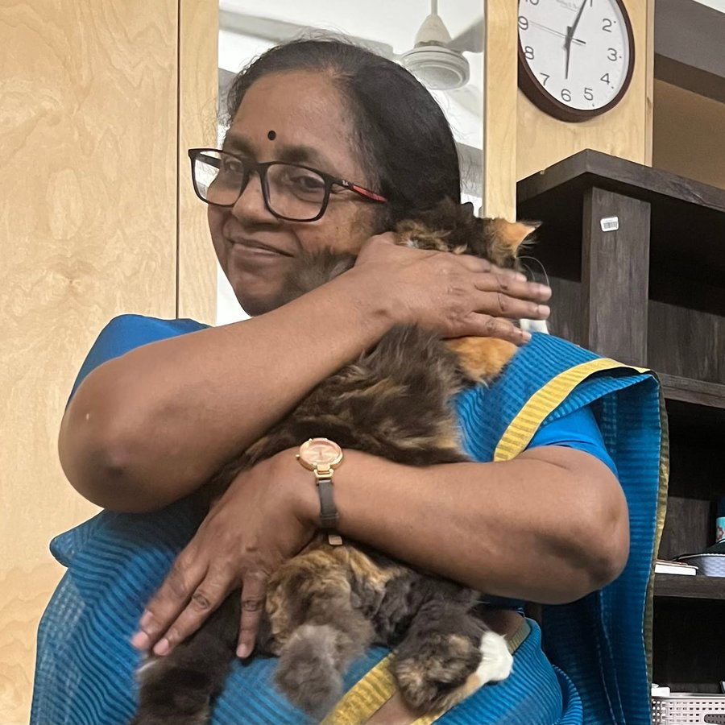
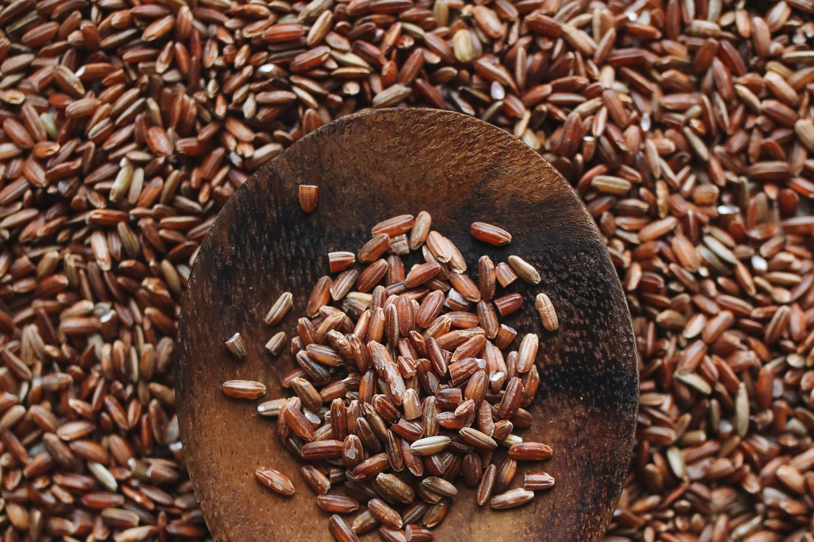
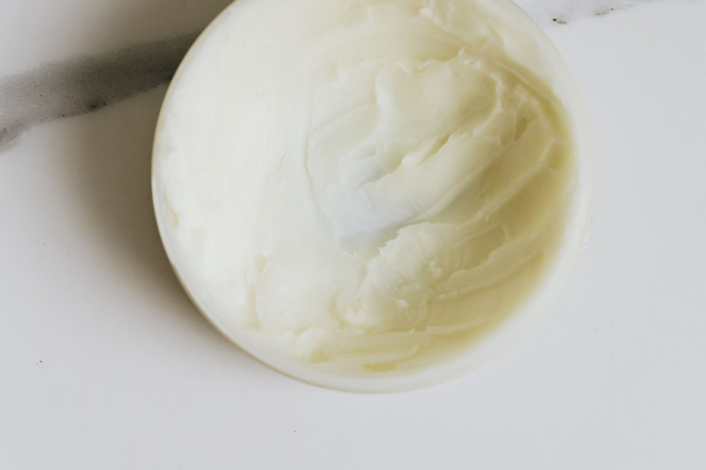

Waterless body care, made with Kerala coconut milk.
Our story

In Kerala the bath was a ritual, not a rush. Coconut milk pressed that morning, rice ground at home, and a grandmother who knew the order of things.
CocoVerge began at home. When Supriya's daughter was treated for a deep vein thrombosis, the scrubs and soaps she had always used suddenly felt harsh on her skin. She went looking for what her grandmother had used: rice, coconut milk and a few plants from the yard, mixed fresh. She worked out the recipes for herself, batch by batch. Supriya watched, used them too, and decided they should not stay in one house.
CocoVerge is the result: a small company run from Vellayani, Thiruvananthapuram, by Supriya AR. We make bars and powders inspired by those baths. Waterless means solid formats with no added water: the coconut milk in them is dried.

Coconut milk is in everything we make. Chamba polishes with it, Venna moisturises with it. Each product starts with one place and one ingredient, and we tell you where we buy it before we tell you what we made from it.
This is a company started by a woman, and we want to build it with women. As we grow, our plan is to make the products in Kerala, in a licensed unit, and to train women from low-income households to run it. We are at the beginning of that, and we will report what we actually do here, not what we hope to do.
Products
Chamba — rice body polish

Launching first. Full ingredient list on the pack.
Venna — after-bath lotion bar

Launching second. Full ingredient list on the pack.
Later
Two more products are in development. We will name them when we have the ingredients in hand.Join the launch list
We are a new company and will start selling once our cosmetic manufacturing licence is issued. Leave your name on WhatsApp and we will message you when Chamba is ready. No payment is taken now.
Join on WhatsAppPrices include GST. Ships across India once launched. Payment only at dispatch. Replaced if damaged in transit.
Your number is used only to tell you about the launch.